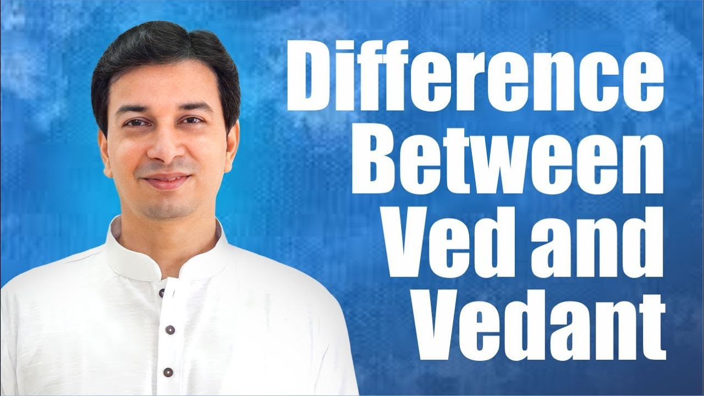

जब कोई पूछता है कि सनातन धर्म का ग्रंथ कौन सा है, तो हम तुरंत कहते हैं: वेद।
पर क्या आपने कभी सोचा है कि वेद वास्तव में है क्या? क्या यह सचमुच एक किताब है, जिसे अलमारी में रखा जा सके? आज इसी धारणा को परखते हैं।
तो वेद और वेदांत में अंतर क्या है? आचार्य जी के अनुसार वेद कोई किताब नहीं, जानने की प्रक्रिया है: इस लोक और परलोक, दोनों का ज्ञान। वेदांत वेदों का अंत है, जहां ऋषियों के अंतिम वचन लिखे गए और जानने की प्रक्रिया पूरी हो जाती है। इसे ज्ञान कांड कहते हैं, जो उपनिषद में गुरु के समीप बैठकर सीखा जाता है।
क्या वेद एक किताब है?
अधिकतर लोगों को लगता है कि वेद नाम की कोई पुस्तक है, कोई ग्रंथ है। पर आचार्य जी कहते हैं, यह धारणा भी मिथ्या है।
एक सरल प्रश्न से शुरू कीजिए: वेद संज्ञा (noun) है या क्रिया (verb)? हम स्वयं को सनातनी कहते हैं, तो कम से कम अपने ग्रंथ के बारे में इतना तो पता होना चाहिए।
उत्तर है: वेद कोई नाम नहीं, कोई किताब नहीं। वेद एक क्रिया है।
आचार्य जी बताते हैं कि "अहं वेद" का अर्थ है "मैंने जाना", और जानने की इसी प्रक्रिया को वेद कहते हैं।
वेद यानी जानना, पर क्या जानना?
वेद का अर्थ है जानना। इस लोक का ज्ञान भी और परलोक का भी।
यहां का सारा ज्ञान, जो हम धीरे-धीरे जानते हैं। और फिर गहरे प्रश्न: मृत्यु के बाद क्या होगा? मैं आगे क्या बनूंगा? मोक्ष होगा या अगला जन्म? संसार का ज्ञान और आध्यात्मिक ज्ञान, यह सब मिलकर वेद है।
अपौरुषेय: किसी एक का लिखा नहीं
वेद को अपौरुषेय कहा गया है, यानी इसे किसी एक व्यक्ति ने नहीं लिखा। इसे देववाणी भी कहा गया है।
अब ज़रा सोचिए: क्या हर व्यक्ति के भीतर ब्रह्म नहीं है? "अहं ब्रह्मास्मि" (मैं ब्रह्म हूं) का यही तो अर्थ है। जब हर एक में ब्रह्म है, तो अनेक लोगों के माध्यम से आया ज्ञान भी देववाणी ही है।
आचार्य जी वेद को एक बड़े पात्र से समझाते हैं, एक ऐसा बर्तन जिसका आकार अनंत है।
तीन गुण, तीन तरह के लोग
भगवद्गीता में श्रीकृष्ण अर्जुन से कहते हैं:
त्रैगुण्यविषया वेदा निस्त्रैगुण्यो भवार्जुन।
निर्द्वन्द्वो नित्यसत्त्वस्थो निर्योगक्षेम आत्मवान्॥
"वेद तीनों गुणों के विषयों से भरे हैं; हे अर्जुन, तू इन तीनों गुणों से ऊपर उठ, द्वंद्वों से मुक्त होकर, नित्य सत्त्व में स्थित होकर, योग-क्षेम की चिंता छोड़कर आत्मवान बन।"
(श्रीमद्भगवद्गीता २.४५)
तीन गुण हैं: सत्व (शुद्धता, संतुलन), रज (क्रियाशीलता, इच्छा) और तम (जड़ता, अज्ञान)। और संसार में इन्हीं तीन प्रकार के लोग हैं।
जब तामसिक व्यक्ति भी लिखता है
तामसिक लोगों के भीतर भी ब्रह्म है, और वे भी कुछ न कुछ कहते हैं। कोई कहेगा: खूब खाओ, पेट भरकर खाओ, पिज़्ज़ा खाओ, सब कुछ खाओ, तभी आनंद मिलेगा।
क्योंकि अंततः सब आनंद ही ढूंढ रहे हैं। तो वेद में कहीं ऐसा अध्याय भी आ जाएगा, अपनी फलश्रुति (पाठ या कर्म से मिलने वाले फल का वर्णन) के साथ।
कोई लिखेगा कि मदिरा पियो, रोज़ चार नहीं, पांच गिलास, तब आनंद आता है। किसी का लेख होगा कि उसमें कैसी औषधि है। आचार्य जी कहते हैं, ऐसे अध्याय कहीं न कहीं अथर्ववेद में मिल जाएंगे।
कोई कहेगा कि एक नहीं, चार-पांच स्त्रियां होनी चाहिए, कामवासना से आनंद मिलेगा। ऐसी कामनाओं वाले अध्याय भी वेदों में कहीं मिल जाएंगे, क्योंकि वह भाग तामसिक लोगों की इच्छाएं पूरी करने वाला है।
फिर राजसिक और सात्विक स्वर आते हैं
संसार में राजसिक और सात्विक लोग भी हैं। तो कोई चिकित्सक लिखेगा: इतनी मदिरा पियोगे तो यकृत (liver) खराब होगा, ऐसा मत करो, ऐसा आहार लो। वह भी वेदों में आएगा।
यही है वेद के विकसित होने की कहानी। लोग लिखते गए कि यह करोगे तो आनंद मिलेगा, और धीरे-धीरे संसार भर का ज्ञान उसमें समाता गया।
जब आप कोई ज्ञान ग्रहण करते हैं, तो क्या आप पूछते हैं कि यह किस गुण से आया है, तम से, रज से या सत्व से?
वेद कभी समाप्त नहीं होता
आचार्य जी कहते हैं कि वेद कभी समाप्त नहीं होता, वह निरंतर बढ़ता रहता है।
क्या जानने की क्रिया आज रुक गई है? आज आप संगणक पर जो नया ज्ञान पा रहे हैं, वह भी वास्तव में वेद का ही भाग है। कोई नया आविष्कार आता है और लोगों को लाभ होता है, वह भी वेद है।
यजुर्वेद, अथर्ववेद जैसे नामों से जो पुस्तकें हम पढ़ते हैं, वे समझने के लिए उस अनंत ज्ञान का केवल एक सार, एक अंश हैं। सब कुछ वेद का ही भाग है।
वेदांत क्या है? जहां जानना पूरा होता है
अब प्रश्न उठता है: ऋषि-मुनि और अवतार भी तो इसी ब्रह्मांड का भाग हैं। उन्होंने भी कुछ कहा होगा। और उनका वचन अंतिम होगा।
उन्होंने क्या कहा? यह ऊपर का सब छोड़ दो, यह सब मोह-माया है, केवल यही करो।
ऋषियों के ये अंतिम वाक्य जहां लिखे गए, वहीं वेद समाप्त होता है। उसके ऊपर कोई शिक्षा नहीं। इसी भाग को कहते हैं वेदांत, यानी वेदों का अंत। यहां जानने की प्रक्रिया पूरी हो जाती है; इसके आगे समझने को कुछ शेष नहीं।
वह ग्रंथ जो कहता है, "मुझे मत पढ़ो"
आचार्य जी बताते हैं कि वेद ही एकमात्र ग्रंथ है जो पुकारकर कहता है कि मुझे मत पढ़ो।
सुनने में अविश्वसनीय लगता है, पर श्रीकृष्ण का "निस्त्रैगुण्यो भवार्जुन" यही कहता है। तीन गुणों वाला पहले का सब छोड़ो, और अंतिम भाग पढ़ो।
पढ़ना ही है, तो क्या पढ़ना है? वेदांत।
ज्ञानी को मोक्ष: इसका असली अर्थ
वेदांत को ज्ञान कांड कहा जाता है। और शास्त्र कहते हैं, ज्ञानी को मोक्ष मिलता है।
पर ज्ञानी का अर्थ विद्यालय जाकर पंडित बन जाना नहीं है। मार्ग चार हैं, और हर मार्ग पर ज्ञान चाहिए:
- कर्मयोग: कर्म ही पूजा है, ठीक है। पर ज्ञानयुक्त कर्म करो। परिणाम समझकर करो, क्यों कर रहे हो यह समझकर करो। गुरु से ज्ञान लो।
- भक्तियोग: अंधश्रद्धा नहीं, ज्ञानयुक्त भक्ति। पहले नारद भक्ति सूत्र समझो, गोपियां कौन थीं, राधा कौन थीं, यह जानो। भक्ति क्या है, यह समझो, फिर करो। तीनों गुणों के अनुसार अपनी मर्ज़ी की भक्ति मत करो।
- ज्ञानयोग: ज्ञान प्राप्त करना है, तो वह भी ज्ञानी की तरह करो।
- ध्यानयोग: फोटो खिंचवाने के लिए हिमालय में जाकर मत बैठो। ध्यान किस पर लगाना है, यह भी ज्ञान लेकर करो।
इसीलिए कहा है: तत्वज्ञानी को मोक्ष। पहले तत्वज्ञान (सत्य के मूल स्वरूप का ज्ञान) समझने का प्रयास करो।
क्या आपकी साधना, चाहे कर्म हो, भक्ति हो या ध्यान, समझ पर टिकी है, या केवल आदत पर?
वेद के तीन कांड कौन-से हैं?
वेद के तीन स्तर समझिए:
- १कर्मकांड: पूजा-पाठ, यज्ञ आदि।
- २उपासना कांड: उसके आगे का स्तर।
- ३ज्ञान कांड: वेदांत, जहां जानना पूर्ण होता है।
उपनिषद: गुरु के समीप बैठना
यही ज्ञान कांड एक शब्द में रूपांतरित हुआ: उपनिषद। उप + नि + षद्, यानी गुरु के समीप, उनके चरणों में बैठना।
यह वह विद्या है जो गुरु के निकट बैठकर, सात्विक अवस्था में सीखी जाती है। और निकट होने का अर्थ है शरणागति (पूर्ण समर्पण) से निकट होना, हृदय से गुरु की बातें समझते हुए सीखना।
मुख्य बातें
- वेद कोई पुस्तक नहीं, एक क्रिया है: "अहं वेद", जानने की प्रक्रिया।
- वेद अपौरुषेय है; उसमें तामसिक, राजसिक और सात्विक, तीनों प्रकार के लोगों का ज्ञान समाया है।
- वेद कभी समाप्त नहीं होता; आज का नया ज्ञान भी उसी का भाग है, और चारों वेद उसका केवल सार हैं।
- ऋषियों के अंतिम वचन, जहां जानना पूरा होता है, वही वेदांत है।
- कर्म, भक्ति, ज्ञान और ध्यान, हर मार्ग ज्ञानयुक्त होना चाहिए; तत्वज्ञानी को मोक्ष मिलता है।
- उपनिषद का अर्थ है गुरु के समीप, शरणागति के भाव से, हृदय से सीखना।

आगे पढ़ें
हर साल हम गुरु पूर्णिमा मनाते हैं। पर क्या कभी रुककर सोचा है कि यह दिन पूर्णिमा को ही क्यों आता है? और जिन वेदव्यास जी को हम इस दिन याद करते हैं,…

क्या गुरु के बिना शास्त्र समझे जा सकते हैं? आचार्य जी की यह कथा बताती है: नहीं। शास्त्र संकेतों में बोलते हैं, और अक्षरशः पढ़ने पर वे अंधश्रद्धा तक…
गीता जी की समझ में सभी धर्मों का मूल स्रोत एक है: वेदों पर आधारित सनातन धर्म, जिससे आगे अन्य धर्म निकले। तत्व के स्तर पर सब धर्मग्रंथों में गहरा…